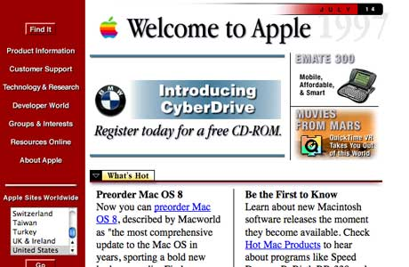

So you want a modern frontend for your Python web app?
Frontend web evolution
Epoch 1: The Web is born
Epoch 2: SPA revolution + JS Fatigue
Epoch 3: You are here
Epoch 1: The Web is born

Architecture:
Fileserver + Clients
Webserver + Clients
Modern Users need...
Instant feedback for actions
Partial page updates, communication with server
Navigation feels fast
Smooth interactions and animations
UI needs to "remember" things (state management)
Attractive, modern design
Responsive and accessabile
Fast load times (code should be small)
Tools and solutions
AJAX and JQuery
Angular - SPA architecture
React - Component-based architecture + Virtual DOM
JS evolved and needed to be transpiled with Babel
Webpack - combine, minify and transpile code
Sass and Less made CSS more managable
Component libraries - MUI
Web platform improvements - Shadow DOM and WebComponents
General process for solving problems...
Add more stuff!
What if we did the opposite?
Hi, I'm Sheena
Founded Prelude Technologies
Founded Guild of Educators
PyCon Africa 2025 Chair
Co-Chair PSF Education and Outreach workgroup
Coding since young teen
Spent the last 6 years in tech education
science of ed => engineering
of ed
🧗♀️🏕️🧭🇿🇦🖊️🛠️🔥🐕🎸👽👩🏻💻 🧑🏫
Current architecture
Backend: API
Frontend: React/Vue/etc
Example: React front
Example 2: NextJS front
Need a lot of skills
Frontend development is complicated
Full stack developers need a lot of skills
Full stack dev - large context, lots of switching, testing is complicated
Deployment and versioning (Moar tools! NextJS?)
Organisations that do web dev
Fullstack devs are expensive
Backend team / Frontend team
Teamwork complexities + friction (add more tools? GraphQL?)
Extra handoffs, more task juggling
Add project management capacity
Where does that leave the junior dev?
Web dev used to be a gateway to Software Eng
Orgs don't hire juniors - only intermediate and upwards (expensive)
Juniors struggle to get the xp they need to be useful - future talent vaccume
Epoch 3: Simple is better than complex
What would we need to do to HTML to make it good enough to support the modern web?
Not much...
Introducing HTMX
Tiny, simple JS library
Allows you to create rich frontend experiences
By adding afew simple attributes to HTML
Works on slow devices
But does it scale?
How much compute does it need?
Can it handle complexity
State management with Alpine.JS
Expand
Content...
What is simplicity worth?
My project
My project
Introduced HTMX
Everyone was productive
I was more productive too
This is what winning feels like
Same team members => more value
Code base smaller + simpler
Fewer weird bugs => less rework and troubleshooting
Everyone == Full stack (including juniors!)
Code Quality
Small compared to React app
Easy to reason about
=> Fewer bugs and faster dev team
Testing and versioning easier
Complicated frontend build pipeline goes away
Deployment simpler
Faster client code, better device support
Remember: Organisations that do web dev
Fullstack devs are expensive
Backend team / Frontend team
Teamwork complexities + friction (add more tools? GraphQL?)
Extra handoffs, more task juggling
Add project management capacity
Organizations which design systems (in the broad sense used here) are constrained to produce designs
which are copies
of the communication structures of these organizations
Use tools that remove constraints on team structure
But wait, there's more
Lowers barrier to entry to web dev
Larger, cheaper talent pool!
Less risk in taking on junior staff and trying new things
Juniors get an opportunity to grow
Getting started
Some inspiration
Django Starter Project
Training at Prelude